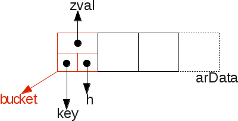
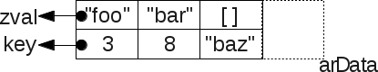
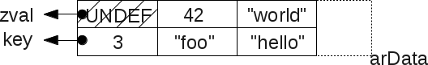
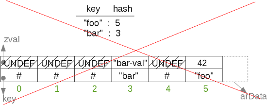
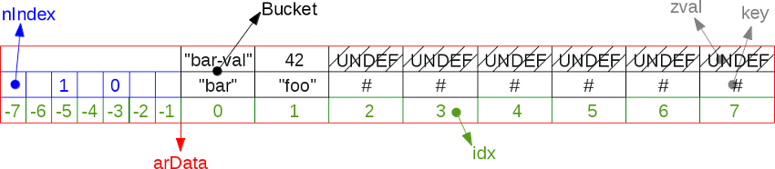
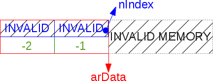
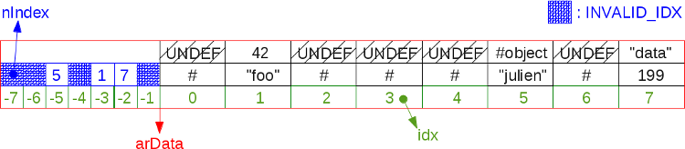
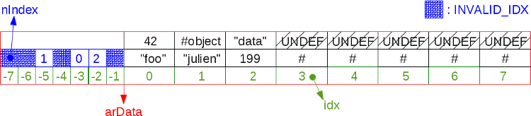
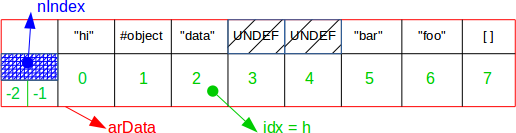

Apr 8th, 2016
Introduction#
HashTables are used everywhere, in every C strong program. Basically, they allow the programmer to store values into an "array" by indexing this latter using strings, whereas the C language only allow integers as C-array keys. A hashtable structure is then built, the string key is hashed and reduced to the hashtable size space. Collisions may then happen, thus a collision resolution algorithm must be used. Several of them exist, PHP chose the linked-list strategy.
If you want to know more about hashtables and their different implementations, you can find great articles about them on the Web as they are a very commonly used structure. http://preshing.com/ is a good start, with lots of detailed articles. Be warned however, there exists tons of ways to design hashtables, none is perfect, all those strategies are tradeoff : wether they optimize CPU cycles, memory footprint, or they scale well in threaded environment... Some are better at insertion, others at finding and probing etc... Depending on the factor you want to push, you'll end up with very different HashTables implementations.
There exists many ways to design HashTables, depending on what factor you want to promote.
PHP 5 Hashtables are detailed in phpinteralsbook I wrote together with Nikic, who himself wrote a nice PHP 7 HashTable article you may find interesting (dating from before PHP 7 release, some little things changed).
This article will detail how hashtables have been designed in PHP 7, how you can deal with them from the C point of view and how you can manipulate them using the PHP language (using the so-called PHP "array" structure). The source code is available in zend_hash.c mainly. Remember that into PHP 7 source code, we use hashtables everywhere (mainly as dictionnaries), thus we may design them so that they are fast in term of CPU usage and have a good memory footprint. This is a critical structure in PHP's overall performances (the most critical one IMO), as PHP arrays are really not the only place where such a structure is used.
HashTable Layout#
Here are some statements, we'll detail them through the article :
- The key may be an integer or a string. If a string is used, a
zend_stringstructure is used, for ints : azend_ulong(which in a platform unsigned extended long). - The hashtable must always remember the order the elements are inserted.
- The hashtable is auto-resizable, that is it auto-grows when needed and can shrink under some circumstances.
- Internally, the table size is always a power of two, for performance point and memory alignment purpose.
- Any value stored into the hashtable is stored into a
zvalstructure, it can't be anything else.zvals can embed any type of data.
Let's go for the HashTable structure :
struct _zend_array {
zend_refcounted_h gc;
union {
struct {
ZEND_ENDIAN_LOHI_4(
zend_uchar flags,
zend_uchar nApplyCount,
zend_uchar nIteratorsCount,
zend_uchar reserve)
} v;
uint32_t flags; /* 32 available flags */
} u;
uint32_t nTableMask; /* mask is -nTableSize */
Bucket *arData; /* useful data storage */
uint32_t nNumUsed; /* next slot available in arData */
uint32_t nNumOfElements; /* total num of busy elements in arData */
uint32_t nTableSize; /* table size, always a power of two */
uint32_t nInternalPointer; /* Used for iteration */
zend_long nNextFreeElement; /* next integer-based key available */
dtor_func_t pDestructor; /* data destructor */
};Some fields are rarely used, and we won't talk about them but about the real load.
This structure weights 56 bytes (under LP64).
The main interesting data field is arData, it is of type pointer to a Bucket chain memory area. A Bucket is one slot into the array :
typedef struct _Bucket {
zval val; /* value */
zend_ulong h; /* hash value (or numeric index) */
zend_string *key; /* string key or NULL for numerics */
} Bucket;You may spot that into the Bucket structure will be stored the zval which represents the PHP useful value. Notice that we don't use a pointer to a zval, but a zval structure itself : this is because in PHP 7, zvals are never heap allocated anymore (compared to PHP 5), but the target value may be heap allocated and stored as a pointer into the zval structure (a PHP string for example).
So let's go for a picture that details how things are stored into memory :

We see there that the data inserted into the hashtable is stored in a contiguous piece of memory : arData
Adding elements while keeping the order of things#
PHP must keep the order data are inserted into an array. When you foreach() an array in PHP, you get back data in the exact same order you inserted them in the array. Whatever their key :
$a = [9 => "foo", 2 => 42, []];
var_dump($a);
array(3) {
[9]=>
string(3) "foo"
[2]=>
int(42)
[10]=>
array(0) {
}
}This fact is important, and it has pushed some constraints into how hashtables are implemented.
All the data are contiguous in memory, they are stored in zvals themselves packed into Buckets allocated as the arData C-array field. Something like that :
$a = [3 => 'foo', 8 => 'bar', 'baz' => []];
Thus iterating over the hashtable is really easy, one must simply iterate over the arData C array, this is a contiguous memory scanning, which is very fast and very CPU cache friendly as the CPU cache line 1 may have loaded the full arData, accessing each cell in about one nanosecond. Note that arData is 64bits aligned to maximize CPU cache transfer and storage (as well as optimizing alignement over 64bit workload full instructions).
Some code to iterate over the hashtable could look like this :
size_t i;
Bucket p;
zval val;
for (i=0; i < ht->nTableSize; i++) {
p = ht->arData[i];
val = p.val;
/* do something with val */
}Like you can see, things are ordered and pushed into the next slot of arData. To accomplish that, we simply keep in memory the next available slot into arData. It is kept in the nNumUsed field.
Everytime a new value is added, we store it at ht->nNumUsed++ (notice the incrementation). When nNumUsed reaches the number of elements in the hashtable (nNumOfElements), we launch a "compact or grow" algorithm that is detailed later.
This is a simplified view of how elements are added to the hashtable, assuming a string key has been used :
idx = ht->nNumUsed++; /* take the next avalaible slot number */
ht->nNumOfElements++; /* increment number of elements */
/* ... */
p = ht->arData + idx; /* Get the bucket in that slot from arData */
p->key = key; /* Affect it the key we want to insert at */
/* ... */
p->h = h = ZSTR_H(key); /* save the hash of the current key into the bucket */
ZVAL_COPY_VALUE(&p->val, pData); /* Copy the value into the bucket's value : add operation */So elements are added at the end of the arData. They are pushed, and middle "holes" (empty deleted slots) are not filled back. We'll detail that.
Deleting values#
When a value is deleted, the arData C array is not narrowed nor are the data rearranged into it.
If we would do that for every item deletion, performances would drop drastically as we would keep moving memory areas for data reorganization.
What we do when we delete an item from the hashtable, is just flaging the corresponding arData slot by a special value that says "there is nothing in here". This value is an UNDEF zval.
Something like that :

Hence, the iteration code must be reworked a little bit to take care of such possible "empty" holes :
size_t i;
Bucket p;
zval val;
for (i=0; i < ht->nTableSize; i++) {
p = ht->arData[i];
val = p.val;
if (Z_TYPE(val) == IS_UNDEF) { /* empty hole ? */
continue; /* skip it */
}
/* do something with val */
}We will see what happens when the hashtable must be resized, and how the arData C array may be reorganized to make "holes" dissapear (compaction).
Even with a very huge hashtable, iterating over it and skipping all possible deleted values (holes) is very fast because of the continuous piece of memory that represents the arData field scanning.
Hashing string-based keys#
When we have a string-based key, we must hash it and reduce it, then make a translation from the hashed-reduced value, and the index into arData.
Even if the key is integer based, it will get reduced as well to fit the arData bounds.
Remember that we cant use the reduced value as-is to index directly the arData C array, because if we do so, that means that the keys used to index the arData are directly bound to the keys obtained from the hash, and that will break one feature of PHP hashtables : keep the order of things into the hashtable.
Example : if I insert something at key "foo", then at key "bar" , imagine key foo get hashed/reduced to the key 5, and for "bar", to the key 3.
If we store the "foo" data in arData[5] and the "bar" data into arData[3], that means that the "bar" data comes before the "foo" data; and when we'll iterate over arData the elements won't show back in the same order they've been inserted...

So, when we hash and reduce the key, to obtain a key bound in the arData keyspace , we can't use it as-is (what we did in PHP 5). We must use another table that will do the translation for us. We'll call that table the translation table , it simply maps the hashed/reduced integer from the key, to an other integer usable to address the arData array.
There is a trick however : the translation table memory is cleverly stored behind the arData vector. That prevents us from using another memory area for such a translation table : it is allocated together along with the arData, and thus stays in the same address range, here again improving data locality.
The layout looks like this, for an 8-element hashtable (the minimum hashtable size actually) :

Now, when you come with the key "foo", this one is hashed through the DJB33X hash, and reduced using a modulo to the arData array size (nTableMask), so that the key now gives an index that can be used to probe the arData translation slots (not the direct slots like we said !).
Like you can see, those slots are accessed using a negative offset from arData starting point, just some C pointer maths are involved, and we keep our full workload into a contiguous space in memory.
The nTableMask is equal to minus the table size, thus when we modulo with it, we get a number from 0 to -7, and can probe our memory zone.
When we allocate the full arData buffer, we compute its size so that it is set of tablesize * sizeof(bucket) + tablesize * sizeof(uint32) translations slots.
This buffer division in two distinct areas is clearly visible in source :
#define HT_HASH_SIZE(nTableMask) (((size_t)(uint32_t)-(int32_t)(nTableMask)) * sizeof(uint32_t))
#define HT_DATA_SIZE(nTableSize) ((size_t)(nTableSize) * sizeof(Bucket))
#define HT_SIZE_EX(nTableSize, nTableMask) (HT_DATA_SIZE((nTableSize)) + HT_HASH_SIZE((nTableMask)))
#define HT_SIZE(ht) HT_SIZE_EX((ht)->nTableSize, (ht)->nTableMask)
Bucket *arData;
arData = emalloc(HT_SIZE(ht)); /* now alloc this */Which gives when macros are resolved :
(((size_t)(((ht)->nTableSize)) * sizeof(Bucket)) + (((size_t)(uint32_t)-(int32_t)(((ht)->nTableMask))) * sizeof(uint32_t)))Pretty nice.
Collisions resolution#
Let's see how collisions are resolved. Remember that in a hashtable, several keys - when hashed and reduced - may lead to the same translation index (infinite place from, finite place to).
So what we do when we got a translation index, is that we use it to fetch back the data from arData (using translation slots) and we check this data is effectively the one we want by comparing the hashes and the keys. If the data is not the right one, we get through a linked list by using the zval.u2.next field , which indicates the next data slot to probe, etc...
Notice how the linked list is not sparsed in memory, like traditionnal linked lists are.
Instead of browsing several allocated pointers obtained from the heap - and thus very likely to be sparsed in memory address range - we keep reading the full arData vector from memory.
This is a crucial point behind performance improvement in PHP 7 hashtable implementation, and in overall PHP 7 performances. Data locality has been hardly worked to reach that goal : do not make the CPU access main memory (slow operation) so often (compared to PHP 5, f.e). PHP 7 hashtable have a very strong data locality, many accesses are fetched from L1 CPU cache (about 1 nanosecond access time), as they very likely fit entirely into the L1 cache of your CPU.
So now, let's see how we add an element to the hash, including managing the hash collisions :
#define HT_HASH_EX(data, idx) ((uint32_t*)(data))[(int32_t)(idx)]
#define HT_HASH(ht, idx) HT_HASH_EX((ht)->arData, idx)
#define HT_IDX_TO_HASH(idx) (idx)
idx = ht->nNumUsed++; /* take the next avalaible slot number */
ht->nNumOfElements++; /* increment number of elements */
/* ... */
p = ht->arData + idx; /* Get the bucket in that slot from arData */
p->key = key; /* Affect it the key we want to insert at */
/* ... */
p->h = h = ZSTR_H(key); /* save the hash of the current key into the bucket */
ZVAL_COPY_VALUE(&p->val, pData); /* Copy the value into the bucket's value : add */
nIndex = h | ht->nTableMask; /* Get the translation table index */
Z_NEXT(p->val) = HT_HASH(ht, nIndex); /* Put the actual element as next of us */
HT_HASH(ht, nIndex) = HT_IDX_TO_HASH(idx); /* Put us into the actual translation slot */The same rules applies to deletion :
#define HT_HASH_TO_BUCKET_EX(data, idx) ((data) + (idx))
#define HT_HASH_TO_BUCKET(ht, idx) HT_HASH_TO_BUCKET_EX((ht)->arData, idx)
h = zend_string_hash_val(key); /* get the hash from the key (assuming string key here) */
nIndex = h | ht->nTableMask; /* get the translation table index */
idx = HT_HASH(ht, nIndex); /* Get the slot corresponding to that translation index */
while (idx != HT_INVALID_IDX) { /* If there is a corresponding slot */
p = HT_HASH_TO_BUCKET(ht, idx); /* Get the bucket from that slot */
if ((p->key == key) || /* Is it the right bucket ? same key pointer ? */
(p->h == h && /* ... or same hash */
p->key && /* and a key (string key based) */
ZSTR_LEN(p->key) == ZSTR_LEN(key) && /* and same key length */
memcmp(ZSTR_VAL(p->key), ZSTR_VAL(key), ZSTR_LEN(key)) == 0)) { /* and same key content ? */
_zend_hash_del_el_ex(ht, idx, p, prev); /* that's us ! delete us */
return SUCCESS;
}
prev = p;
idx = Z_NEXT(p->val); /* get the next corresponding slot from current one */
}
return FAILURE;Translation slots and hash initialization#
HT_INVALID_IDX is a special flag we put in translation table to say "that translation leads to no data, no need to continue".
The hashtable benefit from a two-step initialization, to reduce at maximum the impact of an empty-just-newly-born hashtable (pretty common use case in PHP).
When the table is first created, we create the arData bucket slots together with just two translation slots, and into them we place this
HT_INVALID_IDX flag. We then put the mask so that it will resolve into the first translation slot (leading to HT_INVALID_IDX, and then no data found here).
#define HT_MIN_MASK ((uint32_t) -2)
#define HT_HASH_SIZE(nTableMask) (((size_t)(uint32_t)-(int32_t)(nTableMask)) * sizeof(uint32_t))
#define HT_SET_DATA_ADDR(ht, ptr) do { (ht)->arData = (Bucket*)(((char*)(ptr)) + HT_HASH_SIZE((ht)->nTableMask)); } while (0)
static const uint32_t uninitialized_bucket[-HT_MIN_MASK] = {HT_INVALID_IDX, HT_INVALID_IDX};
/* hash lazy init */
ZEND_API void ZEND_FASTCALL _zend_hash_init(HashTable *ht, uint32_t nSize, dtor_func_t pDestructor, zend_bool persistent ZEND_FILE_LINE_DC)
{
/* ... */
ht->nTableSize = zend_hash_check_size(nSize);
ht->nTableMask = HT_MIN_MASK;
HT_SET_DATA_ADDR(ht, &uninitialized_bucket);
ht->nNumUsed = 0;
ht->nNumOfElements = 0;
}Note that there is no need to use the heap. A static const memory zone is just enough and pretty much light here (uninitialized_bucket).
Then, when the first item is inserted, we fully initialize the hashtable, aka we create the last needed translation slots depending on the size asked (it starts at 8 slots if no clue given). This allocation is done from the heap as some dynamism is showing up.
#define HT_HASH_EX(data, idx) ((uint32_t*)(data))[(int32_t)(idx)]
#define HT_HASH(ht, idx) HT_HASH_EX((ht)->arData, idx)
(ht)->nTableMask = -(ht)->nTableSize;
HT_SET_DATA_ADDR(ht, pemalloc(HT_SIZE(ht), (ht)->u.flags & HASH_FLAG_PERSISTENT));
memset(&HT_HASH(ht, (ht)->nTableMask), HT_INVALID_IDX, HT_HASH_SIZE((ht)->nTableMask))The HT_HASH macro allows to access the translation slots in the negative offset part of the allocated buffer.
The table mask is always negative, because the translation table slots are indexed negatively from the start of the arData buffer.
This is true C programming is all its beauty : you are given billions of memory slots : swim in that infinite pool but don't sink and take care of performances in each memory access !
Here is a hashtable lazy-initialized : It has been created, but nothing has never been inserted into it yet :

Pretty light isn't it ?
Hash fragmentation, resizing and compacting#
When the hashtable becomes full, and one will keep-on inserting items, then the hash must resize itself (on more advantage of hashtables against classical C bound-arrays).
The hashtable size is then doubled everytime it is asked to grow. Here again, when we double the size of the hashtable, we pre-allocate the arBucket C array and store into the empty slots special UNDEF zval values. We then effectively waste space here : (new_size - old_size) * sizeof(Bucket) bytes are actually lost, waiting for data to be inserted and take the UNDEF slots.
Hence if you have a 1024 slots hashtable, and add one more item, the table is going to grow to 2048 slots, having 1023 of them empty, consuming 1023 * 32 bytes = roughly 32Kb here. This is one drawback of PHP's hashtable implementation, which anyway can't be perfect.
Programming is always solving compromises, in case of low level programming, this is a CPU versus memory compromise.
Remember however that the hashtable could be full of UNDEF slots. If one adds many items, then removes many of them, the hashtable will get fragmented. As we never insert something new in such a hole, but at the end of the arData (to keep order of things while iterating), we could run in a scenario where we are at the edge of the end, but still could see may empty UNDEF slots in the arData.
Here is a picture of a very fragmented 8-slots hashtable :

Remember we can't store new values in UNDEF holes, as when we iterate over the hashtable, we start from arData[0] to arData[7] in such an above example (assuming 8-slots hashtable).
Resizing is one occasion to shrink the arData vector and finally fill-in those empty slots by simply reorganizing the data.
When the hashtable is asked to get resized, it first tries to compact itself. It then computes if after compaction it effectively needs to grow, and grows if needed, doubling its size (the arData vector is then realloc()ed as twice its old size). If not needed, data have simply been reorganized into already-allocated slots, an algorithm we can't run at every deletion of items as it would burn CPU cycles too often for not a huge gain (you remember, that famous CPU/Memory compromise in programming ?)
This is a picture of the preceding fragmented hashtable, once it got compacted :

The algorithm must browse the arData and replace every UNDEF slot by the next defined value.
Here it is , simplified :
Bucket *p;
uint32_t nIndex, i;
HT_HASH_RESET(ht);
i = 0;
p = ht->arData;
do {
if (UNEXPECTED(Z_TYPE(p->val) == IS_UNDEF)) {
uint32_t j = i;
Bucket *q = p;
while (++i < ht->nNumUsed) {
p++;
if (EXPECTED(Z_TYPE_INFO(p->val) != IS_UNDEF)) {
ZVAL_COPY_VALUE(&q->val, &p->val);
q->h = p->h;
nIndex = q->h | ht->nTableMask;
q->key = p->key;
Z_NEXT(q->val) = HT_HASH(ht, nIndex);
HT_HASH(ht, nIndex) = HT_IDX_TO_HASH(j);
if (UNEXPECTED(ht->nInternalPointer == i)) {
ht->nInternalPointer = j;
}
q++;
j++;
}
}
ht->nNumUsed = j;
break;
}
nIndex = p->h | ht->nTableMask;
Z_NEXT(p->val) = HT_HASH(ht, nIndex);
HT_HASH(ht, nIndex) = HT_IDX_TO_HASH(i);
p++;
} while (++i < ht->nNumUsed);HashTable API#
So far so good, we know the basics of PHP 7 hashtable implementation. Let's have a look at its public API.
There is nothing special to say except that it is way better designed as PHP 5's; Just keep in mind there are three factors to take into account about what API function to use :
- Your operation (add, remove, clean, destroy etc...)
- The type of your key (integer, or string)
- The type of data you want to store
Remember that wether your key is a string, or an integer ; is a very important factor hashtable API must know as string based keys will need to take the hash from the zend_string and integer based key will directly be used as hash.
Thus, we can meet zend_hash_add(ht, zend_string, data) or zend_hash_index_add(ht, zend_ulong, data).
Sometimes, your key will be a simple classical (char* / size_t) pair. Here, you'll use a different API, f.e zend_hash_str_add(ht, char *, size_t, data).
But keep in mind that whatever happens, the hashtable will deal with a zend_string, and will then turn your C string into a zend_string, duplicating it in memory and computing its hash. That could waste CPU cycles if the string were to be already known. If you can use a zend_string, use it; as they are very likely to have already computed their own hash, hence the hashtable API will simply use it. For example, the PHP compiler computes every hash of every piece of string it uses, as zend_string of course. OPCache also stores such a hash in shared memory. As extension writer : initialize all your zend_string litterals in MINIT.
Finally comes the data you want to store into hashtables. Here again, whatever you use : the hashtable will put it into a zval, stored into each Bucket. But zvals are really flexible in PHP 7, and can store any type of data.
The hashtable API mainly expect you to pack your data into a zval, that is it expects a zval as value. It may however ease things if you got a pointer to store, or a memory area.
It will then take your pointer or memory area, and build a zval with it, then use that zval as data.
Examples are now easy to understand :
zend_hash_str_add_mem(hashtable *, char *, size_t, void *, size_t)
zend_hash_index_del(hashtable *, zend_ulong)
zend_hash_update_ptr(hashtable *, zend_string *, void *)
zend_hash_index_add_empty_element(hashtable *, zend_ulong)Retrieving data, you'll be given a zval *, or NULL. There is a special case for a pointer based value where the API can return it as-is :
zend_hash_find(hashtable *, zend_string *) : zval *
zend_hash_find_ptr(hashtable *, zend_string *) : void *
zend_hash_index_find(hashtable *, zend_ulong) : zval *
zend_hash_index_find_ptr(hashtable *, zend_ulong) : void *About the "_new" API, like zend_hash_add_new() : you should not use it. This is used internally by the engine. This API forces the hashtable to store the data, even if that latter is already available into the hash (same key). You'll end up having doubles, and strange things could then show up. It may be used if you are very sure the data you're going to add is not already present : that will prevent a search for it. Analyze the source for more informations.
Last word : like in PHP 5, the zend_symtable_xxx() API takes care of numeric-like strings to turn them to integers :
static zend_always_inline zval *zend_symtable_update(HashTable *ht, zend_string *key, zval *pData)
{
zend_ulong idx;
if (ZEND_HANDLE_NUMERIC(key, idx)) { /* handle numeric key */
return zend_hash_index_update(ht, idx, pData);
} else {
return zend_hash_update(ht, key, pData);
}
}For iteration, you may use lots of macros, depending on what data you want to be given in the loop : the key, the zval data ...
They're all based upon ZEND_HASH_FOREACH :
#define ZEND_HASH_FOREACH(_ht, indirect) do { \
Bucket *_p = (_ht)->arData; \
Bucket *_end = _p + (_ht)->nNumUsed; \
for (; _p != _end; _p++) { \
zval *_z = &_p->val; \
if (indirect && Z_TYPE_P(_z) == IS_INDIRECT) { \
_z = Z_INDIRECT_P(_z); \
} \
if (UNEXPECTED(Z_TYPE_P(_z) == IS_UNDEF)) continue;
#define ZEND_HASH_FOREACH_END() \
} \
} while (0)You are provided many flavors of them, depending if you want to see the key in the iteration loop, if that key is a string or an integer; If you want to browse the table backwards, if you want it to probe for the pointer data into the zval... etc. ZEND_HASH_FOREACH_KEY(), ZEND_HASH_FOREACH_STR_KEY_PTR(), ZEND_HASH_REVERSE_FOREACH_KEY_VAL() ...
Packed hashtable optimization#
So, remember the crucial design rule : we insert data elements in ascending order into arData, from 0 to end , then we grow the arData vector. This allows us to easily and cheaply iterate over the hashtable : simply iterate over arData C-array.
Because one would use a string or an unordered integer as the hashtable key, we must store a translation table to be able to probe the hash.
But there is one case where such a translation table is useless : if the user only uses integer based keys, and only in ascending order.
In such a special case, browsing the arData from begining to end will retrieve the data in the same order they've been inserted. Thus, for this case only, the translation table is useless, and we may not allocate it at all.
This optimization is called "packed hashtable". Here is a packed hashtable :

Like you can see, the keys are all integer based (no string key) and all in ascending order, even not contiguous.
Iterating from arData[0] to end will then give elements in their right order. Hence, the translation table have been reduced to only two slots, weighting only 2 uint32 (8 bytes). All other translation slots are useless. That may seem strange, but those two slots are here for performances (rather than not having any slot at all).
Be warned however : if you break the rule, for example by now inserting an element with a string-based key (which will need to get hashed/reduced), then we have no other choice of turning this packed hashtable into a classical hashtable : we create the full translation slots and reorganize buckets. Like this :
ZEND_API void ZEND_FASTCALL zend_hash_packed_to_hash(HashTable *ht)
{
void *new_data, *old_data = HT_GET_DATA_ADDR(ht);
Bucket *old_buckets = ht->arData;
ht->u.flags &= ~HASH_FLAG_PACKED;
new_data = pemalloc(HT_SIZE_EX(ht->nTableSize, -ht->nTableSize), (ht)->u.flags & HASH_FLAG_PERSISTENT);
ht->nTableMask = -ht->nTableSize;
HT_SET_DATA_ADDR(ht, new_data);
memcpy(ht->arData, old_buckets, sizeof(Bucket) * ht->nNumUsed);
pefree(old_data, (ht)->u.flags & HASH_FLAG_PERSISTENT);
zend_hash_rehash(ht); /* Prepare the translation table and the translation slots */
}You can spot here that the hashtable u.flags is used to recognize if the hashtable is packed or not.
A packed hashtable will behave differently from a traditionnal hashtable : there is no need to take care of translation slots. Thus, in the source code, you can find many places where packed hashes take a different code path from classical hashes. For example :
static zend_always_inline zval *_zend_hash_index_add_or_update_i(HashTable *ht, zend_ulong h, zval *pData, uint32_t flag ZEND_FILE_LINE_DC)
{
uint32_t nIndex;
uint32_t idx;
Bucket *p;
/* ... */
if (UNEXPECTED(!(ht->u.flags & HASH_FLAG_INITIALIZED))) {
CHECK_INIT(ht, h < ht->nTableSize);
if (h < ht->nTableSize) {
p = ht->arData + h;
goto add_to_packed;
}
goto add_to_hash;
} else if (ht->u.flags & HASH_FLAG_PACKED) {
/* ... */
} else if (EXPECTED(h < ht->nTableSize)) {
p = ht->arData + h;
} else if ((h >> 1) < ht->nTableSize &&
(ht->nTableSize >> 1) < ht->nNumOfElements) {
zend_hash_packed_grow(ht);
p = ht->arData + h;
} else {
goto convert_to_hash;
}
/* ... */So, to sum up things : packed hashtable are an optimization both in term of memory and CPU usage.
For memory first, you consume (table_size - 2) * sizeof(uint32) less bytes compared to a classical hashtable. For thousands of slots, that represents kilo bytes.
For CPU then, because every operation will not have to probe the translation slots, and make the translation. That's barely few less instructions per operation, which can once again show differences in term of millisecond in case of a heavily used/manipulated array.
However, if you start using a string-based key, or if you use an integer key breaking the order of things (inserting key 42 after key 60), then you'll force the hashtable to get converted to a "classical" hash : this process eats a little quantity of CPU cycles (more on very huge arrays), and more memory as well.
To create a packed hashtable, simply tell it to the API :
void ZEND_FASTCALL zend_hash_real_init(HashTable *ht, zend_bool packed)Be warned that zend_hash_real_init() is the full initialization step, not the lazy one (zend_hash_init()).
Usually, when you initialize (lazy) a hashtable and start inserting things into it, it will start itself as packed , and as soon as one condition breaks packed optimization, it will turn to classical hash.
Last word : an API exists if you want to construct a full packed hashtable. Instead of using some zend_hash_index_add() or zend_hash_add_next_index_insert(), this API is fully macro based and as you can spot from its source code : it is very performant.
#define ZEND_HASH_FILL_PACKED(ht) do { \
HashTable *__fill_ht = (ht); \
Bucket *__fill_bkt = __fill_ht->arData + __fill_ht->nNumUsed; \
uint32_t __fill_idx = __fill_ht->nNumUsed; \
ZEND_ASSERT(__fill_ht->u.flags & HASH_FLAG_PACKED);
#define ZEND_HASH_FILL_ADD(_val) do { \
ZVAL_COPY_VALUE(&__fill_bkt->val, _val); \
__fill_bkt->h = (__fill_idx); \
__fill_bkt->key = NULL; \
__fill_bkt++; \
__fill_idx++; \
} while (0)
#define ZEND_HASH_FILL_END() \
__fill_ht->nNumUsed = __fill_idx; \
__fill_ht->nNumOfElements = __fill_idx; \
__fill_ht->nNextFreeElement = __fill_idx; \
__fill_ht->nInternalPointer = __fill_idx ? 0 : HT_INVALID_IDX; \
} while (0)Arrays in PHP land#
You know PHP's arrays. Here, we'll see together how hashtable implementation details can be checked through userland code.
Playing with hashtables memory and packed optimization#
So, here we go for a demo of packed arrays optimisation :
function m()
{
printf("%d\n", memory_get_usage());
}
$a = range(1,20000); /* range() creates a packed array */
m();
for($i=0; $i<5000; $i++) {
/* We keep on inserting keys in ascending order,
* thus the packed array contract is still valid :
* we stay in packed mode */
$a[] = $i;
}
m();
/* We suddenly break packed array contract, and force
* the hashtable to turn to "classical", eating more
* memory for translation slots */
$a['foo'] = 'bar';
m();Like we can expect, the results of memory usage are :
1406744
1406776
1533752For such a 25000 item array, memory usage grows of roughly 130Kb from packed optimized to classical hash.
Now, let's demonstrate the compact-or-grow algorithm in action :
function m()
{
printf("%d\n", memory_get_usage());
}
/* Hashtables are allocated power-of-two. Let's create a
* 32768-slot array (2^15). We use here packed array */
for ($i=0; $i<32768; $i++) {
$a[$i] = $i;
}
m();
/* Let's now empty it */
for ($i=0; $i<32768; $i++) {
unset($a[$i]);
}
m();
/* Add one more element. The hash size should overflow, and
* trigger the compact-or-resize algorithm */
$a[] = 42;
m();That displays :
1406864
1406896
1533872So, when the table is full and when we empty it, the memory usage doesn't move at all (modulo noise). When we finished unset()ing every value, we end having a hashtable which arData is 32768 slots all full of UNDEF zvals.
Then, we add at the next element something. Remember the nNumUsed, used to address arData and which keeps growing at each insertion ? It will now overflow the table size : it is time to compact it or resize it if we can't compact.
Can we compact ?
The obvious answer is yes : we are full of UNDEF slots here, but the true answer is no : we must keep the order of things because we are using a packed array and would want to prevent it from turning to classical array until we are very forced to do so. If we would have added an element to an already existing slot, we would have broken the order of things, and thus the algorithm would have triggered a compaction, and not a resize, eating no more memory. Like this :
/* All code is the same as above, but : */
/* Add one more element at a known index (idx). The hash
* size should overflow, and trigger the compact-or-resize
* algorithm */
$a[3] = 42;
m();Here, memory usage is :
1406864
1406896
1406896See the difference ? Now the algorithm has not resized our table from 32768 to 65538 slots, but have run the compaction.
Our hashtable is still 32767 slots allocated, and as a slot is a Bucket, into which a zval, into which size of a long (42 here) : the memory doesn't move a bit, as the zval already embeds the sizeof a long ;-) Hence, we may now reuse those 32768 slots with integer values, or booleans, or floats , for free. If we would use strings, objects, other arrays etc... as values, then extra memory allocation would be done, which pointer would be stored into the already preallocated UNDEF zvals of our "hot" array.
We can try the same with non-packed hashtable, but classical one, simply using a string based key. Here, when we overflow by one element, the table will compact and not resize, because there is no such thing as order to be kept : we are anyway in non-packed mode, just stick the additionnal value at the leftmost position (idx 0), all follows as UNDEF zvals.
function m()
{
printf("%d\n", memory_get_usage());
}
/* Hashtables are allocated power-of-two. Let's create a
* 32768-slot array (2^15). We DONT use here packed array */
for ($i=0; $i<32768; $i++) {
/* let's have a string-based key, to use classical hash */
$a[' ' . $i] = $i;
}
m();
/* Let's now empty it */
for ($i=0; $i<32768; $i++) {
unset($a[' ' . $i]);
}
m();
/* Add one more element. The hash size should overflow, and
* trigger the compact-or-resize algorithm */
$a[] = 42;
m();That displays :
2582480
1533936
1533936Like expected. The array consumes roughly 2.5Mb here, then when we unset() all its values, memory usage drops : we are freeing the keys. The keys are 32768 zend_string, freeing them drops us to 1.5Mb of memory usage now.
By now adding one more element, we overflow the table internal size, and trigger the compact-or-resize algorithm. As we don't use a packed array, there is no need to keep any order, the table is then compacted, our new 42 value is stored at idx 0, the memory doesn't move a bit. End of story.
Like we can see, packed hashtables can play against us, in some very special cases, preventing the hashtable from compacting and growing it instead. But, will you use such a silly source code in real life example ? This should not impact your day-to-day programming, but if you are looking for true performances (frameworks hear me here ?), and/or want to optimize some batch scripts - with heavy load data pool - this could be a cool trick instead of thinking about turning to true C for such tasks.
If you don't reach many thousands of elements, memory footprint will be ridiculous. But here we played with "only" 20.000 to 32.000 elements, and started seeing megabytes or kilobytes differences.
Immutable arrays#
Immutable arrays are an OPCache specific feature. If you dont enable OPCache, you won't benefit from this concept. Immutable arrays are arrays that are read-only. When OPCache is enabled, it browses every script content, and tries to copy to shared memory many things. Among those things, you will find constant AST nodes. A constant array is a constant AST node. Example :
$a = ['foo', 1, 'bar'];Here, $a is a constant AST node, the compiler detected that it is an array full of constant things , and it turned this array into a constant node.
Then, OPCache browses every scripts' constant AST nodes, and copy their process bound address (heap address) into the shared memory segment and then frees back the process bound address. You may find some more infos about OPCache at PHP's OPCache extension review.
But for arrays, OPCache also turns them into immutable arrays, setting them the IS_ARRAY_IMMUTABLE as well as the IS_TYPE_IMMUTABLE flags. The engine has been designed so that every time it meets an IS_IMMUTABLE data, it takes specific paths about them. For arrays, if you affect an immutable array to a variable, it will not duplicate it, otherwise, a full copy of the array is done.
Such an optimization can be seen in some code like :
$ar = [];
for ($i = 0; $i < 1000000; ++$i) {
$ar[] = [1, 2, 3, 4, 5, 6, 7, 8];
}This script consumes about 400Mb of memory when OPCache is not enabled, and roughly 35Mb when it is activated. This is 10 times less...
In such a script, when OPCache is not enabled, the engine will create a full copy of the 8-element array in each $ar slot, hence having effectively 1 million of 8-slot arrays residing in memory.
If OPCache is turned on, it will flag the 8-slot array as IS_IMMUTABLE, and thus when the executor will run such a script, it will simply copy the 8-slot array pointer to the $ar slots, preventing a full duplication at each loop step.
Obviously, if later on you come to modify one of those arrays, with a statement such as $ar[42][3] = 'foo'; then the 8-slot array residing in $ar[42] will get fully duplicated as Copy on Write mecanism.
Another optimization is blindly done on internal HashTables. Remember that PHP arrays are just one use case of Zend Hashtables. One usage you can feel, because you can manipulate them through the PHP language. But HashTables are used everywhere in the engine.
For example, any PHP scripts may contain functions, and/or classes. Well, those two later big concepts are stored into 2 HashTables. The compiler turns a PHP script into what's called an "OPArray", and it attaches this OPArray the function table (which could be empty), and the class table (which could also be empty). When PHP finished its current request, it must clean this OPArray : it destroys the function table, and the class table. But if OPCache is enabled, it would have turned those two arrays as IMMUTABLE as well, preventing the engine from destroying them. They will be loaded back from shared memory as soon as another request shows in, and asks for such a same script.
OPCache not only stores those tables into memory once and only once, it also prevents them from being destroyed at the end of every request. Such a destruction process can take time, as it is recursive and involves destroying many pointers from memory (the more you have classes and functions, the more the destroy process will be long). Thus, immutable hashtables also allow OPCache to speed up the shutdown sequence of the engine, and the current PHP process will be recycled faster to treat another pending request : this accelerates the overall performances of PHP.
Don't get confused by immutable arrays. For example, there is no optimization at this time for such a scenario :
$a = [1];
$b = [1];Here, two arrays will be created in memory. There is no process like for interned strings, where the engine tracks every piece of string used to reuse it if it meets it later on. Immutable arrays are arrays full of immutable types (no variables, no function calls, everything is resolvable at compile time), which are not duplicated in memory when carried from one place to the other as PHP runtime goes, and which are never destroyed from memory (from one request to the other). Also, immutable arrays are only used if the OPCache extension is enabled.